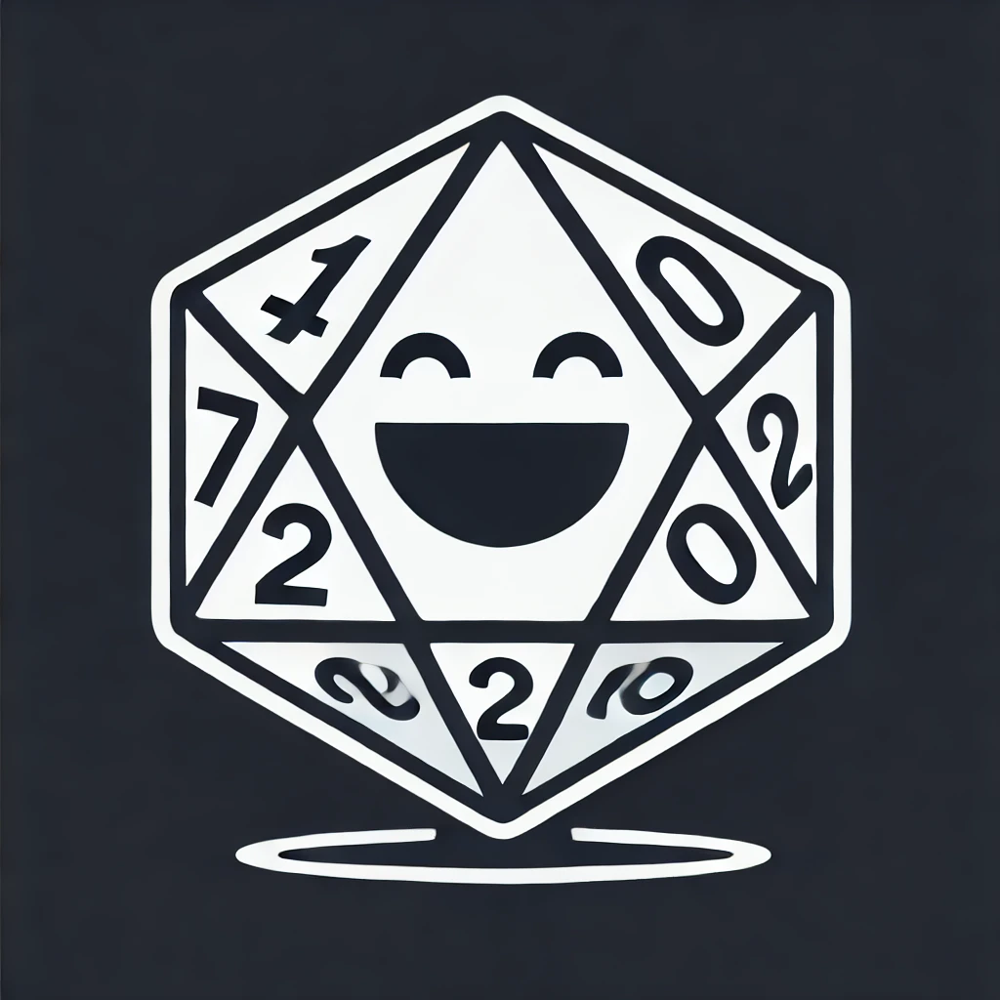

Press Start
First time? Read this.
- Standard — draws a phrase from your list. Weighted syntax:
[3] yesmakes "yes" 3× as likely. - Mythic Fate — rolls the Mythic Fate Check (2d10 + odds + chaos). Choose Odds and a Chaos Factor.
- Mythic Meaning — rolls Action word pairs for inspiration. Add descriptors for two more words.
- Append meaning words — in Standard or Fate, adds an Action pair to every roll.
- Keyboard: Space starts/stops. R rolls once. Click a history entry to re-hear it.
- On phones, the voice list may take a moment to populate. Grant the page screen-wake permission for long sessions.
Generate a scenario (OpenRouter / Tome seeds)
Tome of Adventure Design seeds
Roll concrete seeds from a curated set of Tome of Adventure Design tables. The roll replaces the seeds field; edit freely afterwards. Sketch composes a local bullet scenario from the seeds without calling OpenRouter.
Tables from Tome of Adventure Design by Matt Finch (Frog God Games).
Edit full prompt (advanced)
Everything above
===USER PROMPT=== is the system prompt; everything below it is the user message.
Put {{seeds}} where the seeds text should go — if you omit it, seeds are appended to the user message automatically.
Recent rolls
No rolls yet.
Audio Oracle v1.6